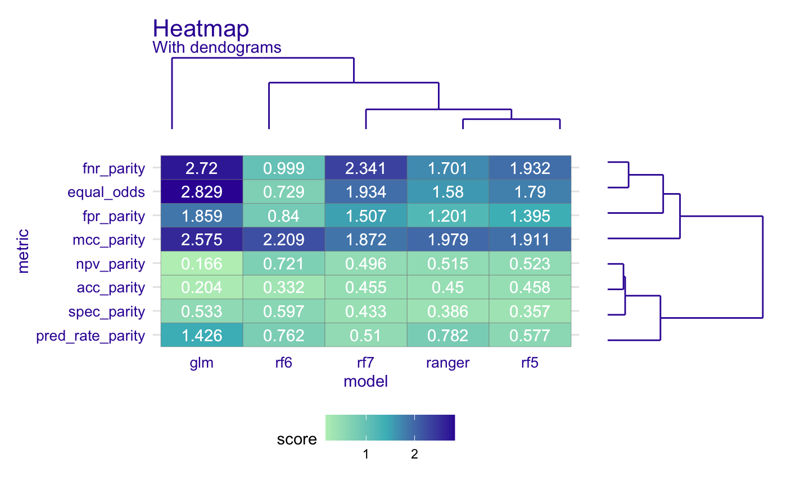

plot_heatmap.RdPlot Heatmap
plot_heatmap( x, midpoint = NULL, title = NULL, subtitle = NULL, text = TRUE, scale = FALSE )
| x | fairness object |
|---|---|
| midpoint | midpoint on gradient scale |
| title | title of the plot |
| subtitle | subtitle of the plot |
| text | deafult |
| scale | whether metrics should be normalised |
ggplot object
library(ranger) library(DALEX) data(compas) # models y_numeric <- as.numeric(compas$Two_yr_Recidivism)-1 rf_compas_1 <- ranger(Two_yr_Recidivism ~Number_of_Priors+Age_Below_TwentyFive, data = compas, probability = TRUE) # Wszystko model_compas_lr <- glm(Two_yr_Recidivism~., data=compas, family=binomial(link="logit")) rf_compas_5 <- ranger(Two_yr_Recidivism ~., data = compas, probability = TRUE) # Wszystko rf_compas_6 <- ranger(Two_yr_Recidivism ~ Age_Above_FourtyFive+Misdemeanor, data = compas, probability = TRUE) # dziwny model rf_compas_7 <- ranger(Two_yr_Recidivism ~., data = compas, probability = TRUE) # Wszystko rf_compas_8 <- ranger(Two_yr_Recidivism ~ Sex+Age_Above_FourtyFive+Misdemeanor+Ethnicity, data = compas, probability = TRUE) # dziwny model # explainers explainer_1 <- explain(rf_compas_1, data = compas, y = y_numeric)#> Preparation of a new explainer is initiated #> -> model label : ranger ( default ) #> -> data : 6172 rows 7 cols #> -> target variable : 6172 values #> -> data : A column identical to the target variable `y` has been found in the `data`. ( WARNING ) #> -> data : It is highly recommended to pass `data` without the target variable column #> -> model_info : package ranger , ver. 0.12.1 , task classification ( default ) #> -> predict function : yhat.ranger will be used ( default ) #> -> predicted values : numerical, min = 0.2998486 , mean = 0.4555049 , max = 0.7817028 #> -> residual function : difference between y and yhat ( default ) #> -> residuals : numerical, min = -0.7627162 , mean = -0.0003850316 , max = 0.7001514 #> A new explainer has been created!#> Preparation of a new explainer is initiated #> -> model label : lm ( default ) #> -> data : 6172 rows 7 cols #> -> target variable : 6172 values #> -> data : A column identical to the target variable `y` has been found in the `data`. ( WARNING ) #> -> data : It is highly recommended to pass `data` without the target variable column #> -> model_info : package stats , ver. 3.6.3 , task regression ( default ) #> -> predict function : yhat.glm will be used ( default ) #> -> predicted values : numerical, min = 0.1144574 , mean = 0.4551199 , max = 0.995477 #> -> residual function : difference between y and yhat ( default ) #> -> residuals : numerical, min = -0.9767658 , mean = 5.050949e-13 , max = 0.8822826 #> A new explainer has been created!#> Preparation of a new explainer is initiated #> -> model label : ranger ( default ) #> -> data : 6172 rows 7 cols #> -> target variable : 6172 values #> -> data : A column identical to the target variable `y` has been found in the `data`. ( WARNING ) #> -> data : It is highly recommended to pass `data` without the target variable column #> -> model_info : package ranger , ver. 0.12.1 , task classification ( default ) #> -> predict function : yhat.ranger will be used ( default ) #> -> predicted values : numerical, min = 0.1264992 , mean = 0.4551041 , max = 0.850245 #> -> residual function : difference between y and yhat ( default ) #> -> residuals : numerical, min = -0.7873925 , mean = 1.583329e-05 , max = 0.8476722 #> A new explainer has been created!#> Preparation of a new explainer is initiated #> -> model label : ranger ( default ) #> -> data : 6172 rows 7 cols #> -> target variable : 6172 values #> -> data : A column identical to the target variable `y` has been found in the `data`. ( WARNING ) #> -> data : It is highly recommended to pass `data` without the target variable column #> -> model_info : package ranger , ver. 0.12.1 , task classification ( default ) #> -> predict function : yhat.ranger will be used ( default ) #> -> predicted values : numerical, min = 0.3049157 , mean = 0.4550504 , max = 0.5127666 #> -> residual function : difference between y and yhat ( default ) #> -> residuals : numerical, min = -0.5127666 , mean = 6.953684e-05 , max = 0.6950843 #> A new explainer has been created!#> Preparation of a new explainer is initiated #> -> model label : ranger ( default ) #> -> data : 6172 rows 7 cols #> -> target variable : 6172 values #> -> data : A column identical to the target variable `y` has been found in the `data`. ( WARNING ) #> -> data : It is highly recommended to pass `data` without the target variable column #> -> model_info : package ranger , ver. 0.12.1 , task classification ( default ) #> -> predict function : yhat.ranger will be used ( default ) #> -> predicted values : numerical, min = 0.1317667 , mean = 0.4553115 , max = 0.8333707 #> -> residual function : difference between y and yhat ( default ) #> -> residuals : numerical, min = -0.7753397 , mean = -0.0001915704 , max = 0.8462226 #> A new explainer has been created!# diffrent labels explainer_4$label <- "glm" explainer_5$label <- "rf5" explainer_6$label <- "rf6" explainer_7$label <- "rf7" fobject <- create_fairness_object(explainer_1,explainer_4,explainer_5,explainer_6,explainer_7, outcome = "Two_yr_Recidivism", group = "Ethnicity", base = "Caucasian")#> Getting data from first ( ranger ) explainerplot_heatmap(fobject)